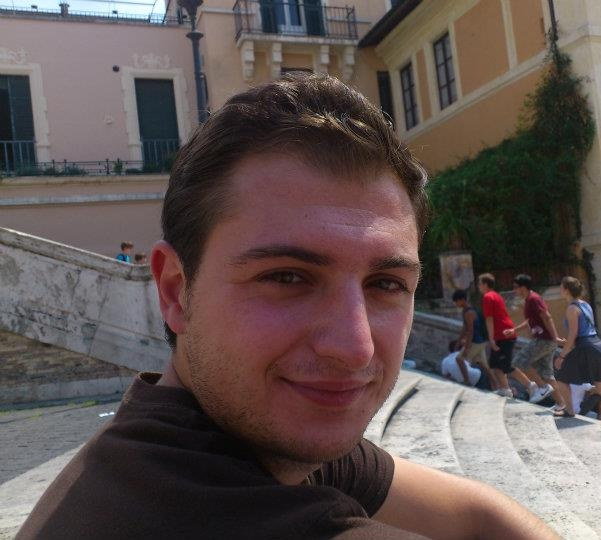

Lucio Azzari
|
 |
|---|
Lucio Azzari was born in Teramo, Italy, in 1985. He received the
B.Sc. and M.Sc. degrees in Electronic and Telecommunication Engineering
from Università degli Studi Roma Tre, Rome, Italy, in 2007 and 2010,
respectively.
He is a researcher of the Department of Signal Processing,
Tampere University of Technology, Tampere, Finland. His work regards 3D
image and video rendering, noise estimation and denoising techniques,
and nonlocal algorithms. He has also collaborated with the Nokia
Research Center of Hermia, Tampere, Finland.
Currently he is pursuing the Ph.D. degree on Signal Processing in the Tampere University of Technology.
|
|
|
|---|
Last Updated: